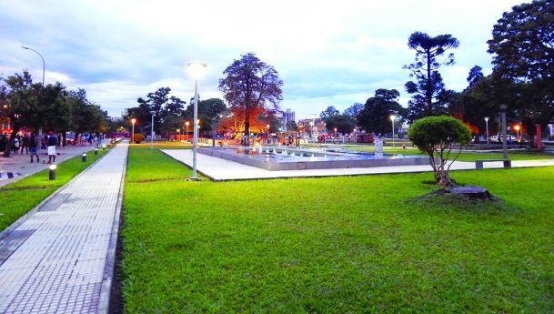
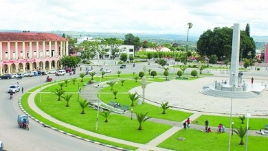
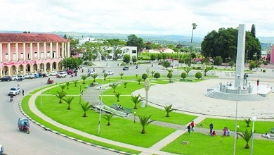
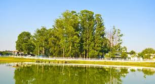
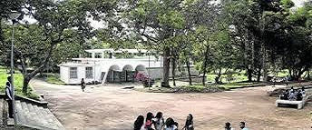
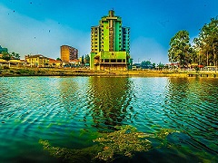

Cidade do Huambo
Jardim da cultura
Um dos pontos mais visitados da cidade do Huambo é sem duvidas o jardim da cultura, pois para lém de refletir uma aura calma e acomchegante do outro lado da estrada encontamos a estatua do homem que foi um dos primeiros a chegar nessa nobret terra. Também podemos encontrar perto alguns dos mas famosos restaurantes ao seu redor.
Esses jardim é sempre lotado de pessoas durante os finais de semana especialmente nos domingos.Vejamos o que estão falando sobre esse belo jardim no Facebook?
Monumento Dr.António Agustinho Neto
 

É o ponto turístico mais visitado da cidade alta ou de toda cidade, ele assim como jardim da cultura recebe muitos visitantes, mas diferente do anterior este recebe visitas todos os dias, isso deve-se a presença da estatua do primeiro presidente de Angola,e não só ele é também a maior rotunda de Angola.
Ver mais em Twitter
Estufa "Àrea acadêmica"
  Outro ponto muito visitado da cidade é a estufa , um lugar aonde podemos encontra estudantes do primeiro ciclo á estudantes universitários estudando. Na sua maioria as pessoas que lá vão estão querendo sucego para poderem estudar melhor, particularmente falando dos estudates do ISPHbo que vão sempre para lá já que muito perto do instituto.
Fotos Instagram